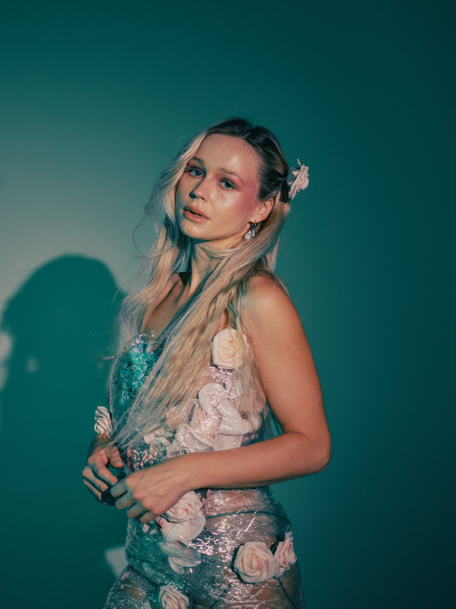
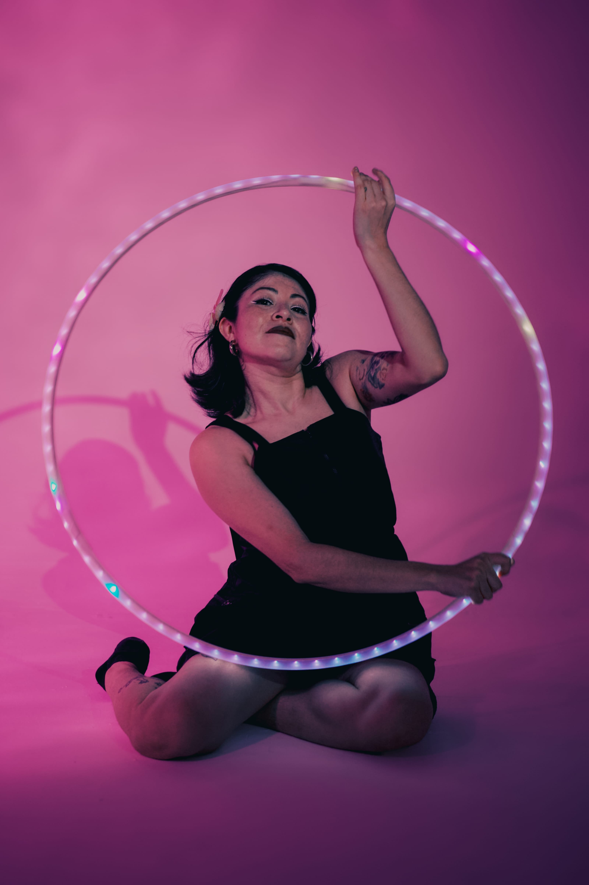
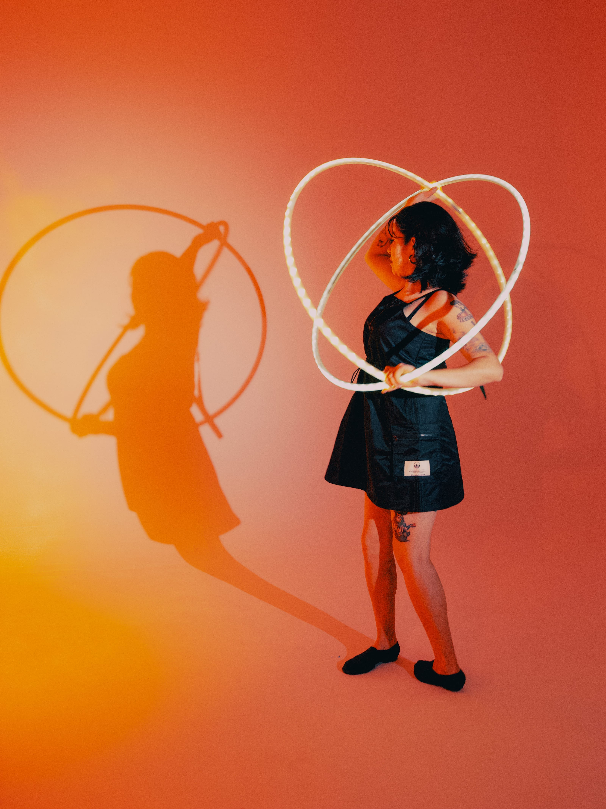
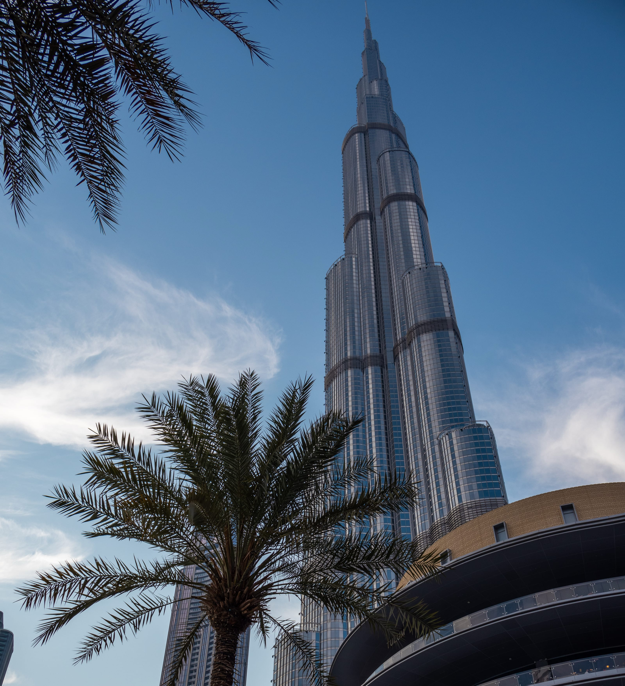

Midnight Track Stories Night-time automotive coverage focused on rolling shots, drag-strip action, and cockpit/detail frames with cinematic motion. View Full Gallery
Monochrome Character Set Monochrome portrait studies with clean framing and tonal contrast to emphasise expression, texture, and mood. View Full Gallery
Editorial Colour Study Colour-rich editorial portrait collection with styled wardrobe, controlled studio light, and beauty-led composition. View Full Gallery 
Neon Motion Portraits Creative neon portrait session featuring bold coloured lighting, movement, and experimental studio visuals. View Full Gallery  
Urban Lines & Landmarks City and architecture frames featuring landmark skylines, structural lines, and wide-angle perspectives built around place and scale. View Full Gallery 